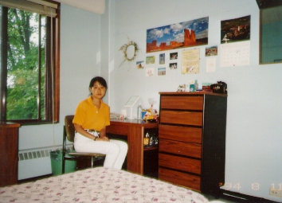

最初の２ヶ月 (94.7)
寮で

|
会社を辞めたのが６月３０日、次の日が渡米、というハードなスケジュールにしたばかな私(^^;。最初の３日はニューヨークの友達のところに泊めてもらって、その後やっと現在の学校へきました。 ＥＳＬ(English as a second language)の夏期コースに参加です。同じ寮にはヨーロッパからの留学生もいて、毎日毎晩にぎやかでした。しょっちゅうパーティをしていて、行きたくなくても断れずに行く、というようなことも続きました。 夏は比較的、人も少なく楽しかったのですが、私は勉強だけでなく、自力で生活するということがこの留学の目標でもあったので、夏のコースが終わると同時にこの寮を出ていくことにしました。 最初の２ヶ月だけの寮生活。英語も伝わらず、ペースもくずれ、とても大変な時でした。働いていた頃、「英語がうまくなりたいんだったら恥ずかしいと思っちゃだめだ」と言われていたことをよく思い出しました。 楽しかった２ヶ月、いい思い出になりました、、、としめくくれればよいのですが、こんなのまだまだ序の口、このあと、これでもかこれでもか、という（私にとっての）困難が次々現れるのでした(^^; （とりあえず引越しについての書いたものはここです。）でもそのたびに、助けようとしてくれる人、協力しようとしてくれる人、アドバイスをくれる人がいて、暖かい気持ちも味わうことができました。 |

=寮で(94.7)=
|
この写真はカメラをおいて自分でとったもの。疲れているわけでも、気落ちしていたわけでもありません。写真ができて、「こんなに緊張していたのか！」とびっくりしました。でも、きっと最初の頃はいつもこういう顔をしていたんだろうな、、(^^ゞ。 アメリカ人とかヨーロッパ人は、寮に着くとすぐ、自分の部屋を部屋らしくしていました。私は、ベッドや机を動かしていいのかもわからず、２、３日そのままにしていたら、私の部屋に遊びに来た人がびっくりしていました。「どうして写真をはったりしないのか」って。私が「貼るもの（セロテープとか）がない」と言うと「買えばいい」とお店を教えてくれたりしました。私は言われないとやらない自分の性格を実感しました。気をつけよう、と思うのですけど、２９年間で培った私の性質は根強く、今でもアドバイスを受けてはじめて実行、、ということが後を立ちません。(^^ゞ |
[ホームへ] [写真一覧へ]